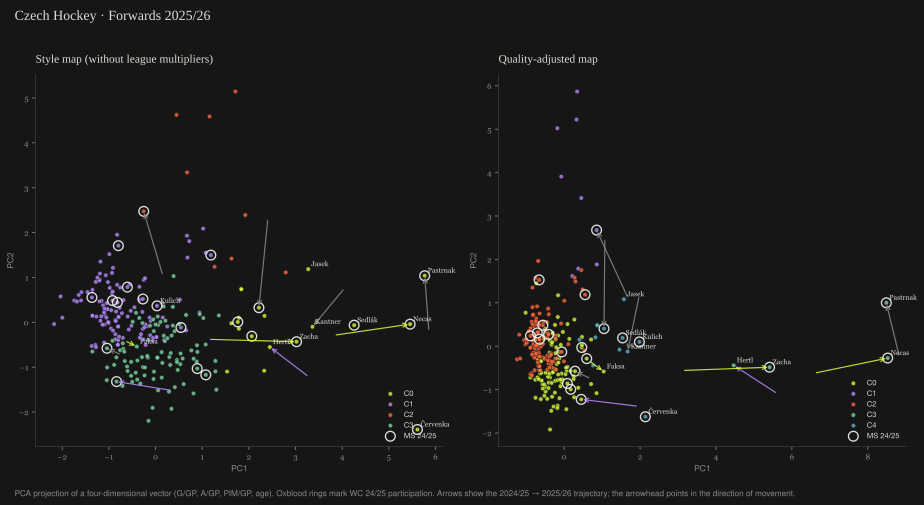
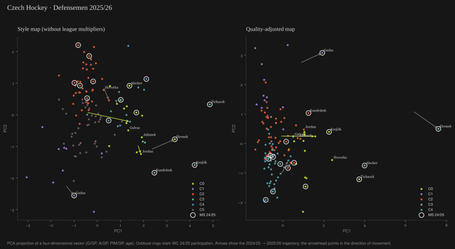

Player Pool Atlas · hockey · edition 01 · rendered 18 May 2026 · English edition 12 September 2026
Who Czech hockey produces, per capita
Hockey intuition knows the Czech pool player by player. It has no single place where the structure is added up against Finland, Sweden and Slovakia. So I built one: 385 players, two projections, one number that nobody had aggregated, and two analyses that did not survive their own review.
- NHL players per million Czechs, 2025/26
- 1.38 fifth of six · Finland ≈ 4×, Sweden ≈ 5×
- U22 forwards in the NHL
- 1 FIN 3 · SWE 7
- Czech NHL defencemen, all ages
- 4 FIN 14 · SWE 30 · U22: none
- mapped pool
- 385 NHL · Liiga · Extraliga · 2024/25 → 2025/26
The atlas is a map of the Czech professional player pool, read through data rather than reputation: every active player with Czech eligibility in the NHL, Liiga and the Tipsport Extraliga, segmented by position and playing profile, with the national-team cycle laid over it1. It makes no predictions and recommends no roster. It is a methodological tool for watching a pool over a four-year cycle, and it exists because the structural comparison with peer countries is the kind of thing everyone in hockey knows in fragments and nobody holds in one place.
One number nobody had added up
Take every player with birth_country = CZE on a 2025/26 NHL roster, fifteen of them, and divide by 10.9 million inhabitants23. Do the same for five peer countries. Czechia lands fifth of six.
The USA has the most NHL players in absolute terms and a population of 340 million to dilute them. Slovakia, with half the Czech population, outranks Czechia. Finland's density is roughly four times higher, Sweden's five. None of this is news to a scout; the point is that the number now has a definition and a source, and can be recomputed next season by anyone.
Where the gap is: two cohorts
Split the NHL contingent by position and age and the structure shows. Each cell is the number of players and their median points per game.
| cohort | CZE | FIN | SWE | SVK |
|---|---|---|---|---|
| U22 | 1 · 0.42 | 3 · 0.24 | 7 · 0.45 | 4 · 0.33 |
| 23–25 | 2 · 0.22 | 9 · 0.24 | 13 · 0.32 | — |
| 26–29 | 4 · 1.06 | 8 · 0.46 | 11 · 0.40 | 2 · 0.28 |
| 30+ | 5 · 0.19 | 5 · 0.47 | 15 · 0.58 | — |
| cohort | CZE | FIN | SWE | SVK |
|---|---|---|---|---|
| U22 | — | — | 5 · 0.23 | 1 · 0.38 |
| 23–25 | 1 · 0.00 | 1 · 0.27 | 12 · 0.24 | — |
| 26–29 | 1 · 0.60 | 5 · 0.18 | 5 · 0.23 | 2 · 0.26 |
| 30+ | 1 · 0.23 | 3 · 0.35 | 8 · 0.49 | — |
The Czech U22 forward cohort in the NHL is one player: Kulich. Finland has three, Sweden seven. The 26–29 elite, Pastrňák, Nečas, Zacha, Hertl, holds a median of 1.06 points per game, world class by any reading, and is four players deep. Defence is the structural problem at every age: four Czech defencemen in the NHL in total, against Finland's fourteen and Sweden's thirty, and none under 221.
Two maps, on purpose
Every player is a four-dimensional vector (goals, assists and penalty minutes per game, age), projected with PCA and clustered with K-means, the number of clusters chosen by silhouette. The atlas draws it twice. The style map uses raw per-game rates and shows the playing profile: Pastrňák and Červenka sit in the same production zone, because in their own leagues they produce alike. The quality map multiplies each rate by a league factor first, and the NHL elite pulls away, Pastrňák at PC1 ≈ 8.5 against Červenka at ≈ 2. Showing both, side by side, means the effect of the league adjustment is visible instead of baked in, and the reader does not have to accept a single narrative1.


The forwards fall into four archetypes: top-six scorers (18 players, median birth year 1996), young prospects and depth (122, mostly Extraliga, median 2001), physical role players (9, penalty minutes five to six times the cohort median) and veteran two-way forwards (92). The national-team pool, 42 of the 81 players who played the 2024 or 2025 World Championship, spans all of them and both ecosystems: it is neither an NHL contingent nor an Extraliga contingent, it is the bridge1.
Keeping small samples honest
Per-game rates lie when the sample is tiny. A player with four games and five points, 1.25 P/GP raw, would outrank Pastrňák. So rates are shrunk towards their league median with an empirical-Bayes prior, \(K = 10\) phantom games:
At one game the median dominates (about 91 %); at eighty the player's own data does (about 89 %). The four-game player drops to 0.59 P/GP, which is where a four-game sample belongs4.
The league multipliers are the honest weak point: NHL 1.00, AHL 0.55, SHL 0.45, Liiga 0.42, NL 0.40, Extraliga 0.35, first league 0.20, approximations informed by public NHL-equivalency work5. So they were perturbed by ±20 % each and the quality ranking recomputed: the top ten changes by at most one player in any scenario, the mean rank shift in the top twenty stays under five places, and the NHL top four stay the top four everywhere4. The map is not sensitive to the thing I was least sure of.
| scenario | top-10 overlap | churn | mean Δ rank, top 20 |
|---|---|---|---|
| baseline | 10 / 10 | 0 | 0.00 |
| Liiga −20 % | 9 / 10 | 1 | 4.35 |
| Liiga +20 % | 9 / 10 | 1 | 1.90 |
| Extraliga −20 % | 9 / 10 | 1 | 1.30 |
| Extraliga +20 % | 10 / 10 | 0 | 2.50 |
| all −20 % / all +20 % | 10 / 10 | 0 | 0.00 |
Two analyses that did not ship
An age-production curve for the Extraliga came out looking like players improve into their thirties. They do not; the ones still playing at 33 are the ones good enough to still be playing, and the curve was survivorship. An early attempt at youth-to-Extraliga conversion was right-censored, because the historical youth rosters had not been scraped yet and the recent ones had not had time to convert. Both were dropped before publishing and the atlas says so. A method that cannot say what its data cannot show is not a method1.
The rest of the limits, stated in the atlas: public data only, so none of the video breakdown, conditioning and micro-stats the national team's staff holds; no KHL, for sanctions and data-access reasons; multipliers that are approximations, tested rather than trusted. The patterns are hypotheses for someone with the internal data to validate, not conclusions.
The rest of the atlas
Above the structural layer sits an applied one: a Neo4j knowledge graph of about 3 200 players across NHL, AHL, Extraliga, Liiga, SHL and the Swiss NL, with identity resolution on name, date of birth and position across sources; FAISS similarity search in the style space; historical career analogs from a corpus of 1 177 players; and per-player scouting briefs drafted by an LLM under grounding rules (names reproduced verbatim, position-filtered similarity, regular-season stats labelled as such)1. Every ingest that mutates the graph is preceded by a read-only merge check that computes the ids it would write and counts collisions first; that check caught a duplicate-node bug that would have created about 570 phantom players6.
The whole pipeline is public, MIT, seed 42 for everything stochastic: make install && make all6. The live atlas, with interactive cluster filters, player cards and the briefs, is at hockey.datasimply.eu, in English and Czech.
References
- Šandová, B. (2026): Czech Hockey · Player Pool Atlas, edition 01, rendered 18 May 2026; English edition 12 September 2026. Summary, cohort tables, cluster archetypes, trajectories, limitations.
- NHL Stats API, api-web.nhle.com/v1: 2024/25 and 2025/26 rosters,
birth_countryfield; peer countries computed the same way. Enrichment: MoneyPuck (5v5 per-60, xG); Liiga season totals; hokej.cz Extraliga statistics and birth dates; IIHF tournament rosters (WC 2024, WC 2025, WJC 2024, WJC 2025) via Wikipedia for the eligibility filter. - Population denominators: 2024 estimates (Czechia 10.9 M); the atlas methodology note states the figure used for each country.
- Šandová, B. (2026): atlas Methodology: Bayesian shrinkage (K = 10), PCA loadings by position and projection, sensitivity table.
- League multipliers informed by public NHL-equivalency comparisons: hockeyviz.com; Sznajder's NHLe analyses. Approximations, tested at ±20 %.
- sandovabarbora/czehockey-player-pool-atlas, MIT. Pipeline, graph ingest with read-only merge check, render, site build. Report snapshot 18 May 2026 (re-fetching would change the season and the numbers).